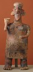

|  |
Pacific Coast region (Mexico), |
Resources on the World Wide Web
Resources in Print
Berjonneau, Gérald and Jean-Louis Sonnery. Precolumbian Art: Mexico, Guatemala, Honduras. Boulogne, France: Editions Arts, 1985.
Furst, Peter T. "West Mexican Mortuary Art: A Look Back." Studio Potter 16, no. 1 (December 1987): 39-46.
Kan, Michael, Clement Meighan, and H. B. Nicholson. Sculpture of Ancient West Mexico: Nayarit, Jalisco, Colima. Los Angeles: Los Angeles County Museum of Art in association with University of New Mexico Press, 1989.
Smith, Bradley. Mexico: A History in Art. Garden City, New York: Doubleday & Company, 1968.
Search ArtsConnectEd by keyword.
Search the ArtsConnectEd database, a joint project of the Minneapolis Institute of Arts and the Walker Art Center. By choosing one of the words below, you will be searching through the artworks, library records, educational materials, and more.
Nayarit, figure, tomb, caricature, sculpture, Mexico, ceramic, Jalisco, Colima, artifact, earthenware, pre-Columbian, archeology, excavation, burial, clay

Key ideas.
Where does it come from?
What does it look like?
How was it used?
How was it made?
Discussion questions.
Additional resources.
Select another piece.